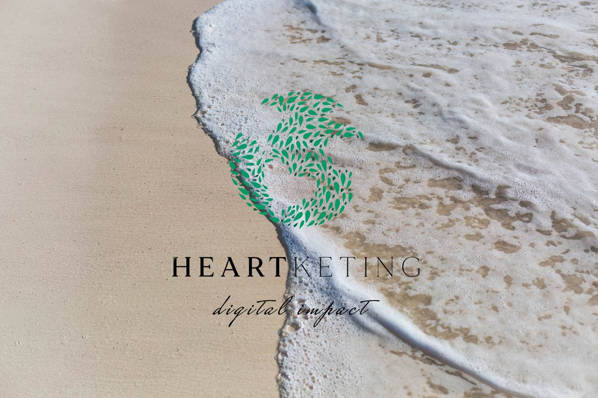

Marketing with heart.
Heartketing is the pro bono initiative born from Une Digitale Naudy: putting our expertise in web design, branding and digital communication to work for foundations, associations and the causes they serve.

Born in Switzerland, built for impact
Heartketing was born in Switzerland after two years of digital and communication work within the Une Digitale Naudy agency teams. Our goal is to help people get involved for different causes thanks to the digital world.
On one side, Heartketing helps foundations and associations improve their digital presentation, website and online communication, and helps them fundraise through digital communication strategies, social media and dedicated campaigns.
On the other side, we help companies represent foundations and associations and support their fundraising through business models, communication and events.
We believe in a worldwide union toward a more powerful impact on every project — and that together, we can make the world feel better. In a world with no boundaries online, let's all feel concerned by what happens everywhere, and get involved for a digital impact.
Causes we support
Hand2Hand
A solidarity association providing direct support to people in need.
Support provided: website creation & digital communication.
The Planet Brand
A community and content project raising awareness around sustainability and environmental action.
Support provided: social media & communication strategy.
Save the Children Switzerland
The Swiss branch of Save the Children, the global movement for children's rights, protection, education and emergency relief.
Support provided: digital communication support.
BetterWorld Fund
An impact fund supporting projects and organizations working toward a better, more sustainable world.
Support provided: website & communication support.